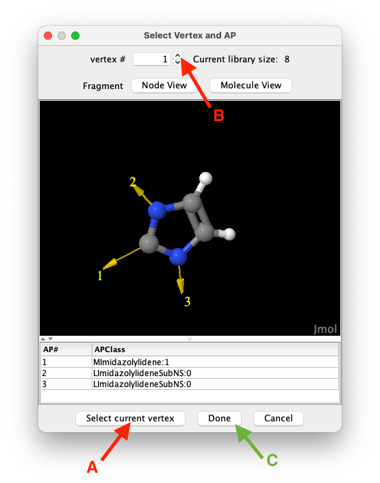
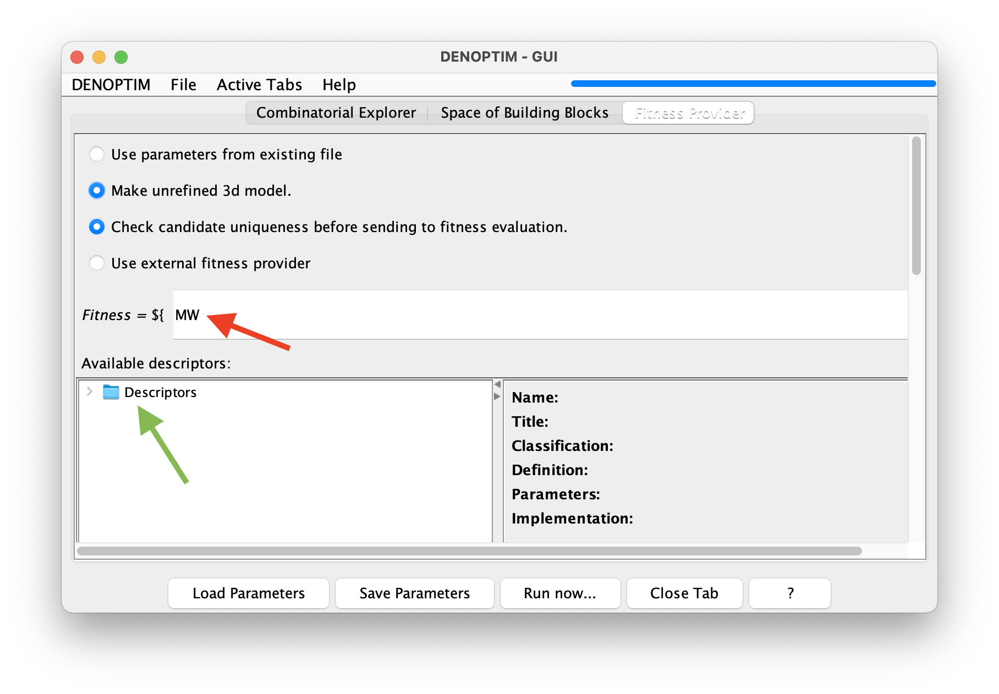

Tutorial 1.2: Building Transition Metal Complexes from Fragments
This tutorial is about creating a small space of building blocks from scratch.
Create a Space of Building Blocks (Fragment Space)
Open the Graphical User Interface (GUI) by running the
denoptimcommand.Chose
Make Fragmentsfrom the list of shortcuts, orFile->New->New Molecular Fragments.Using the button under Import a structure from
File, load the structures fromtutorial_1.2/Pt_complexes-1.sdfandtutorial_1.2/Pt_complexes-1.sdf.We are now going to generate building blocks from these two structures. Since you have just imported two structures from file, you should see a label stating
Current library size: 2in the right-hand panel. Use the above arrow-buttons to select the structure you want to chop, and then click onChop Structureand thenStart Fragmentation. When asked, chose to keep only selected fragments (see Figure 1). Namely, keep only one fragment for each of these:
Iodine atom (X-ligand) with one attachment point,
NO2 (X-ligand) with one attachment point,
Pyridine (L-ligand) with one attachment point,
Phosphorous atom (L-ligand) with four attachment points,
Phenyl group with one attachment point (i.e., substituent on P),
Five-atom ring of imidazolylidene (a N-heterocyclic carbene, or NHC, fragment) with one attachment points (see Figure 1).

Figure 1: To select a vertex to import click on the
Select current vertexbutton (A), use the spinner (B) to navigate the list of candidates, and clickDoneto close the vertex selection window confirming your selection.
Remove the two un-fragmented structures that were imported from file. Use the
Removebutton from the top-right part of the panel. After removing these structures, theCurrent library sizeshould be 6, as only one item for each of the fragments listed in point 4 has been kept.To increase the structural variability of the N-substituents on the NHC fragment, we add more fragments by hand. Since NHCs can often be synthesised starting from amines (see Chem. Rev. 2011, 111, 4, 2705–2733, we create simple amines and convert them into fragments suitable to become N-substituents on the NHC. To this end, generate the structure of each of the following amine by clicking on Import structure from
SMILESand type one of the following SMILES string:CNc1(C)ccccc1NC1CCCCC1NFor each of these, select the hydrogen atoms bonded to N (see Note below for useful atom selection tricks) and delete them by clicking on theRemove atoms. Then select the N atom and clickAtom to APto replace the N atom with an attachment point of classLImidazolylideneSubNS:1.
NOTE:Right-click on the molecular viewer to get the vast functionality offered by Jmol, including, for instance, see theSelect->Invert Selection. In particular, in the right-click menu you can choseConsoleto open Jmol's command line interface and use theselectcommand. Here are some common examples of use:select _N: selects all nitrogen atoms.select atomno >= 10 and atomno <= 43: selects atoms from number 10 to 43 in the list of atom. Note the use of a the logical operatorand.select search("<SMARTS>")where<SMARTS>is a SMARTS pattern. For example,select search("[#7]-[#6]"): selects all nitrogen and carbon atoms of any kind that are connected by a single bond.select search("[r5]"): selects all atoms that are part of a five-member ring.select selected OR connected(selected): propagates selection to all atoms connected to currently selected atoms.select none: clears the list of selected atoms.
With the
Save Library of Building Blocksbutton, save the resulting library of 9 building blocks to an SDF file, call itmy_library_of_fragments.sdfunder thetutorial_1.2folder.As pointed out in the previous tutorial, to use a space of building blocks we need also to define the set of rules that control how the building blocks are attached to each other. To this end we exploit the fact that attachment points are annotated with attachment point classes (APClasses) that can be used to classify attachment points according to any criteria. Typically, APClasses are used to label attachment points generated by retrosynthetic fragmentation (see BRICS or RECAP), or to classify attachment points based on the chemistry of the fragment which they belong to. Irrespectively, we can can create compatibility rules that define which combination of APClasses can be used to connect building blocks. Since, in theory, given a set of
NAPClasses, any APClass can be combined with any APClass, it is convenient to think about theNxNcombinations as a matrix, i.e., the compatibility matrix, where each entry defines if the corresponding combination of APClasses is ‘compatible’ (i.e., can form an edge in the graph representation) or not. In the following, we will create a compatibility matrix, i.e., a collection of compatibility rules, that define how to use the building blocks generated above to assemble Pt complexes. In DENOPTIM, clickFile->New->New Compatibility MatrixSince we already have defined the APClasses when constructing fragments (NB: in step 4 we did so, implicitly, by using the default cutting rules. Instead in point 6 we choose the APCLasses ourselves), we can import the list of APClasses that we want to use from the file containing the building blocks. To this end, click
Import APClassesto load the APClasses first from thePt-CO_fragment.sdffile and then from themy_library_of_fragments.sdf. In both cases, chooseScaffolds and Fragmentswhen asked about the type of building block. As we are just importing APClasses, no reaction is visible in the GUI upon confirming the type of building block.Then
Add Compatibility Ruleand specifyLlig:0on the left side (i.e., this is the APClass on a growing graph). On the right-hand side (i.e., the APClass of the incoming fragment) select all the APClasses that represent the capability to coordinate a metal as a dative L-ligand, namelyMPyridine:1,MPhosphine:1, andMImidazolylidene:1. Hold thecommand/CTRLkey to select multiple entries.NOTE: the two lists in the window for defining a new APClass compatibility rule refers to different roles of the attachment point: growing graph on the left, and incoming fragment on the right-hand side. Therefore, adding "compatibility between classA:0andB:0" (i.e.,A:0selected in the left list, andB:0in the right one) is not equivalent to adding "compatibility betweenB:0andA:0" (i.e.,B:0selected in the left list, andA:0in the right one).Add the compatibility rule between
Xlig:0and all available APClasses that represent the capability to bind the metal as a covalent X-ligand, namelyMI:1,MNitro:1.Add the compatibility rule between
LImidazolylideneSubNS:0andLImidazolylideneSubNS:1.Add the compatibility rule between
LPhosphineSubAr:0andLPhosphineSubAr:1.Import the APClasses from
H_and_Me.sdfspecifying the typeCapping Group.We now define the rules to saturate open valences, i.e., attachment points that need to be saturated in order for the graph to represent a fully defined molecular object. Move to the
Cappingtab and click onAdd Capping Ruleto require that all attachment points with APClassLImidazolylideneSubNS:0orLPhosphineSubAr:0(multiple selection is allowed) are saturated with a capping group having an attachment point of APClasshyd:1(Inspecting the content ofH_and_Me.sdfshows there is a fragment with a H atom and a single attachment point with classhyd:1).Last, we define which APClasses represent attachment points that cannot stay unused, but have no capping group, i.e., the forbidden ends. For example, the covalent sites on the metal center: leaving them free would change the oxidation state of the metal, but adding a capping group would add a bias towards a specific building block in that position. To avoid introducing a bias as well as avoiding to generate metal centers with wrong oxidation state, we now mark the covalent sites on the Pt center as forbidden ends. To this end, move to the
Forbidden Endstab andAdd Forbidden End RuletoXlig:0. For reproducibility, add alsoLlig:0. This to we avoid generating Pt complexed with no dative ligand beyond CO.Save the compatibility matrix as
my_compatibility_matrix.parunder thetutorial_1.2folder.As we have defined a library of building blocks and the rules on how to combine such building blocks, our definition of a space of building blocks is complete.
Explore the Space of Building Blocks
Exploring a space means visiting all the items that can be generated from such space. Therefore, here we aim to generate all the Pt complexes that are encoded in the space of building blocks we have defined above.
Click on
File->New->New Virtual Screening.In the windows for the configuration of the run, under the
Space of Building Blockstab browse to specify:
Pt-CO_fragment.sdffor the *Scaffold fragments library *my_library_of_fragments.sdffor the Fragments libraryH_and_Me.sdffor the Capping groups librarymy_compatibility_matrix.parfor the Compatibility matrix filesince we have some very heavy atoms, we need to specify 1000 for the
Max molecular weight.
We decide to sort the generated Pt complexes by molecular weight. Therefore, switch to the
Fitness Providertab and typeMWin the text box defining the equation of the fitness (see Figure 2).
Figure 2: The fitness equation (red arrow) allow to define a mathematical expression for calculating an overall figure of merit (i.e., the fitness) for each complex that is generated from the space of building blocks. This example chooses sets the fitness equal to the value of the molecular weight descriptor
MW. The list of available descriptors can be found by navigating the descriptor’s tree (see green arrow).Click on
Run Now...and confirm you want to run the experiment. A dialog will tell you where the results will be places: take note of such pathname.For a short moment the bar on the top-right part of the DENOPTIM window, which was originally blue, will turns grey to indicate that all the submitted tasks are still running. Then, in a few seconds, it will turn blue again to indicate that the run is completed.
File->Open Recentto select the results and open them.